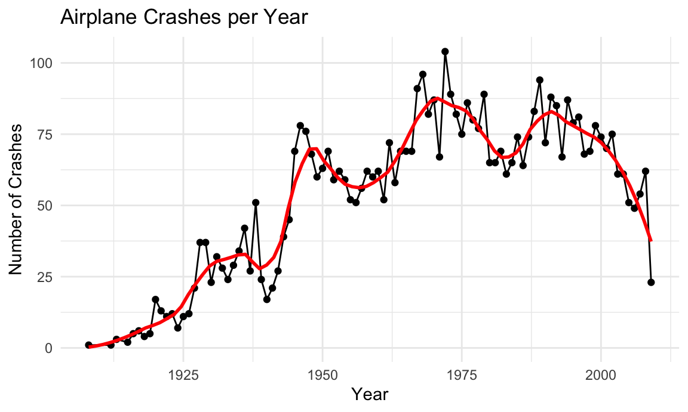
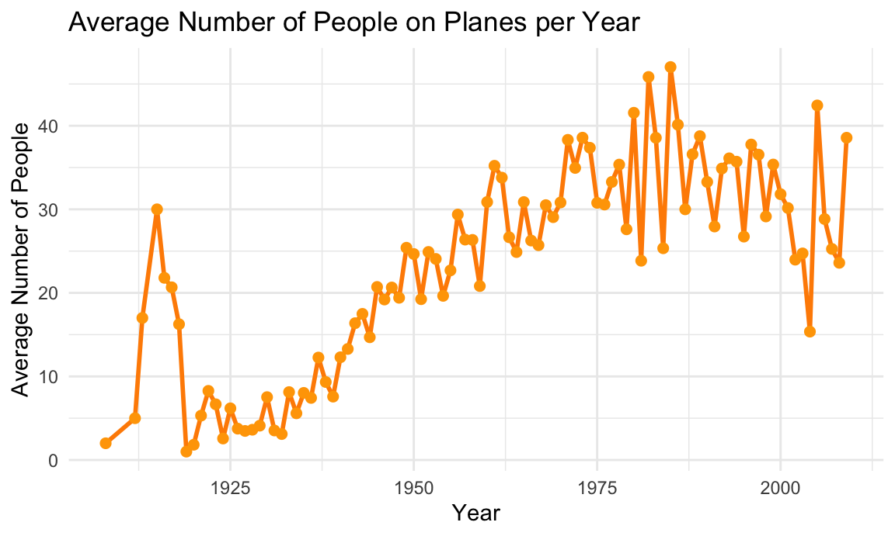
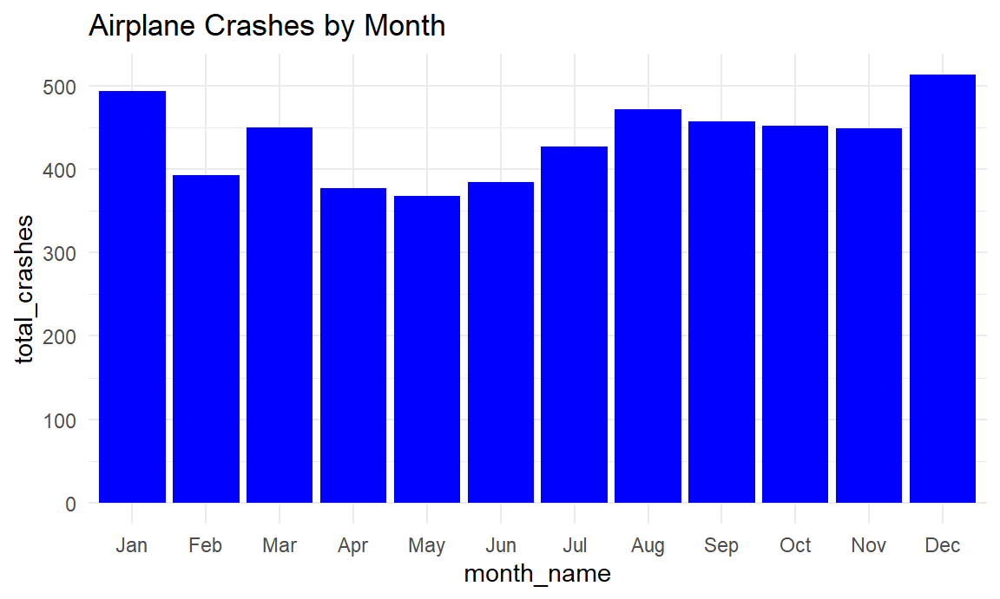
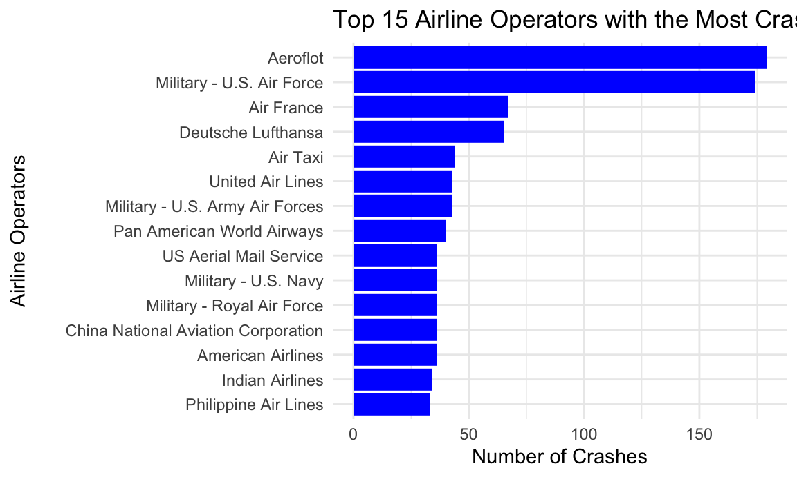
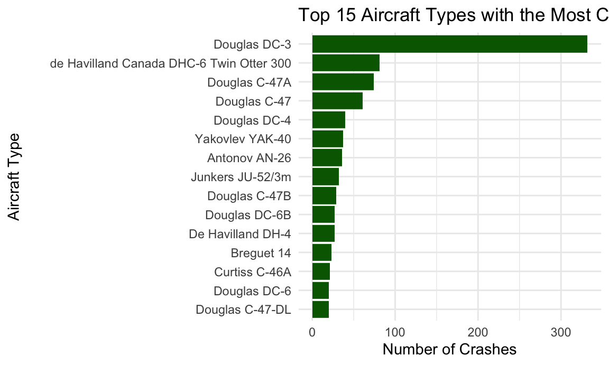
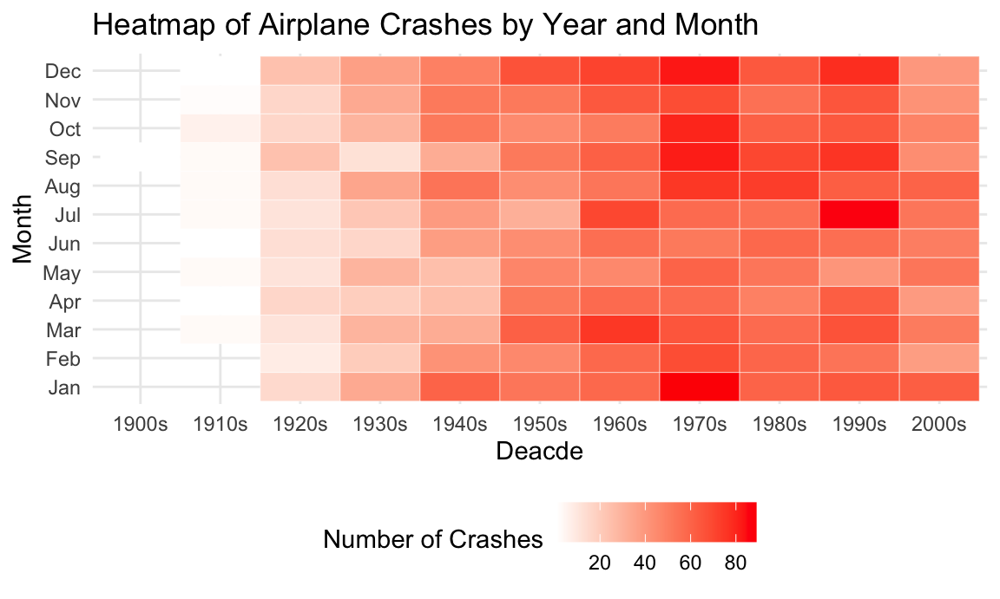

Exploring the Data
Loading and cleaning the data.
airplane_df = read_csv("datasets/airplane_crashes_data.csv") |>
janitor::clean_names() |>
filter(ground != "NULL", aboard != "NULL") |>
# removes unnecessary columns for our analyses
select(-flight_number, -time, - registration)## Rows: 5268 Columns: 13
## ── Column specification ─────────────────────────────────────────────────────────
## Delimiter: ","
## chr (10): Date, Time, Location, Operator, Flight #, Route, Type, Registratio...
## dbl (3): Aboard, Fatalities, Ground
##
## ℹ Use `spec()` to retrieve the full column specification for this data.
## ℹ Specify the column types or set `show_col_types = FALSE` to quiet this message.Converting 2 digit years to four digit years.
airplane_df = airplane_df |>
mutate(
# remove leading and trailing spaces
date = str_trim(date),
# extract month, day, and year from the date string
m = as.numeric(sub("/.*", "", date)),
d = as.numeric(sub(".*/(.*)/.*", "\\1", date)),
y = as.numeric(sub(".*/(.*)$", "\\1", date)),
# convert 2-digit years (<100) to 4-digit (1900s)
y = ifelse(y < 100, y + 1900, y),
# rebuild the string
date_clean = paste(m, d, y, sep = "/"),
# convert to Date type
date = mdy(date_clean),
# extract numeric year and month
year = year(date),
month = month(date),
month_name = factor(month(date,
label = TRUE,
abbr = TRUE),
levels = month.abb)
) |>
select(-m, -d, -y, -date_clean) # remove unnecessary columnsConverting variables to their proper variable types.
airplane_df = airplane_df |>
mutate(
aboard = as.numeric(aboard),
fatalities = as.numeric(ground),
operator = as.factor(operator) # to group by operator
)Creating a decade column, now that year is numeric.
airplane_df = airplane_df |>
mutate(
decade = floor(year / 10) * 10,
decade = paste0(decade, "s")
) |>
select(date, year, decade, month, month_name, everything()) Exploring the data.
Crashes per year?
# first, using ggplot
airplane_df |>
group_by(year) |>
summarize(total_crashes = n()) |>
ggplot(aes(x = year, y = total_crashes)) +
geom_line() +
geom_point() +
geom_smooth(span = 0.2, color = "red", se = FALSE) +
labs(
title = "Airplane Crashes per Year",
x = "Year",
y = "Number of Crashes"
)## `geom_smooth()` using method = 'loess' and formula = 'y ~ x'
Interactive plot of crashes per year with plotly.
airplane_df |>
count(year) |>
plot_ly(
x = ~year,
y = ~n,
type = "bar",
mode = "lines+markers",
hovertemplate = "Year: %{x}<br>Crashes: %{y}<extra></extra>"
) |>
layout(
title = list(
text = "Airplane Crashes per Year",
y = 0.98,
font = list(size = 20)
),
xaxis = list(
title = list(
text = "Year",
font = list(size = 16)
)
),
yaxis = list(
title = list(
text = "Number of Crashes",
font = list(size = 16)
)
)
)How many people were flying in planes, on average, per year??
airplane_df |>
group_by(year) |>
summarize(avg_aboard = mean(aboard, na.rm = TRUE), .groups = "drop") |>
ggplot(aes(x = year, y = avg_aboard)) +
geom_line(color = "darkorange", size = 1) +
geom_point(color = "orange", size = 2) +
labs(
title = "Average Number of People on Planes per Year",
x = "Year",
y = "Average Number of People"
)
Seasonal trends, combining all years?
airplane_df |>
group_by(month_name) |>
summarize(total_crashes = n()) |>
ggplot(aes(x = month_name, y = total_crashes)) +
geom_col(fill = "blue") +
labs(title = "Airplane Crashes by Month")
Top airlines with crashes?
airplane_df |>
group_by(operator) |>
summarise(total_crashes = n(), .groups = "drop") |>
slice_max(total_crashes, n = 15) |> # select the top 15 operators
ggplot(aes(x = reorder(operator, total_crashes), y = total_crashes )) +
geom_col(fill = "blue") +
coord_flip() +
labs(
title = "Top 15 Airline Operators with the Most Crashes",
x = "Airline Operators",
y = "Number of Crashes"
) +
theme(
axis.title.y = element_text(margin = margin(r = 20))
)
Top aircraft types with crashes?
airplane_df |>
filter(!is.na(type), type != "n/a") |>
group_by(type) |>
summarize(total_crashes = n(), .groups = "drop") |>
slice_max(total_crashes, n = 15) |> # select the top 15 aircraft types
ggplot(aes(x = reorder(type, total_crashes), y = total_crashes)) +
geom_col(fill = "darkgreen") +
coord_flip() +
labs(
title = "Top 15 Aircraft Types with the Most Crashes",
x = "Aircraft Type",
y = "Number of Crashes"
) +
theme(
axis.title.y = element_text(margin = margin(r = 20))
)
Looking at the number of fatalities per year. I have excluded the year 2001, which was an outlier and had 5,641 fatalities, because of the 9/11 attacks.
# summarize the fatalities by year
fatalities_per_year = airplane_df |>
group_by(year) |>
summarize(total_fatalities = sum(fatalities, na.rm = TRUE)) |>
arrange(year) |>
filter(year != 2001) # removes the 2001 outlier for plotting
# plot the values
ggplot(fatalities_per_year, aes(x = year, y = total_fatalities)) +
geom_col(color = "darkblue") +
labs(
title = "Total Fatalities from Airplane Crashes per Year",
x = "Year",
y = "Number of Fatalities"
)
Looking at seasonal and yearly trends more closely.
# heatmap of crashes by year and month
airplane_df |>
count(decade, month_name) |> # counts crashes in the decade/month
ggplot(aes(x = decade, y = month_name, fill = n)) +
geom_tile(color = "white") +
scale_fill_gradient(low = "white", high = "red") +
labs(title = "Heatmap of Airplane Crashes by Year and Month",
x = "Deacde",
y = "Month",
fill = "Number of Crashes")